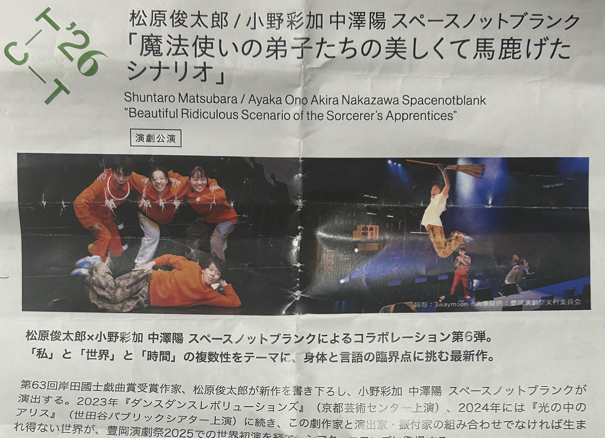
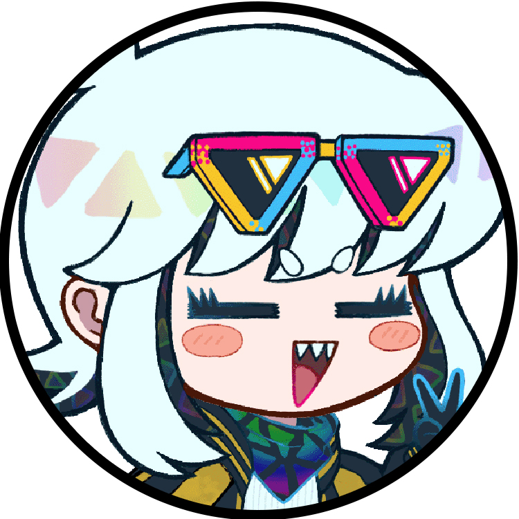

「魔法使いの弟子たちの美しくて馬鹿げたシナリオ」

【作品情報】
ジャンル：演劇
タイトル：「魔法使いの弟子たちの美しくて馬鹿げたシナリオ」
制作 ：作・松原俊太郎
演出・小野彩加 中澤陽 スペースノットブランク
初演 : 2025年9月13日～15日／静思堂シアター
【観劇情報】
2026年2月26日～3月1日／ゲーテ・インスティテュート東京
詳細なクレジットは、公式のものをご参照ください。
URL https://matsubarashuntaro.com
X→ @shuntaro_m ／Instagram→ @shuntaroum
※ この記事はネタバレを含みます。
※ 現在サイト工事中のため、PC表示推奨です。スマホだと文字が小さいです。
劇場に行こう！


≪２月２８日の赤坂≫
「ゲーテ・インスティテュート」につづく坂道。
えーっとね、まずこの人が死ぬでしょー？
で、この人が実は裏切り者ね。
師匠の魔法使いがラスボスで、そいつと通じてるの。
けど仲間になって、魔法使いを倒して、最初に死んだ人が魔法で生き返って、ハッピーエンドね。
どーせ知らないだろうけど、こういう劇での『魔法』っていうのは、大概、比喩やメタファーなのよ。ファンタジーな冒険モノなんか期待して見に来てる奴はいないから。
テンメンちゃんがパンフレットをじっくり読む──
ファンタジーじゃんやっぱり！
◆ ◆ ◆
なんとかやっていく
≪開演後≫
「この四人で、なんとか、なんとかやっていきたいと思いますけれどね」
演劇が始まってすぐ、カトウが観客に呼びかける。
ナニカ「はい、いまどんな言葉が浮かんできてる？」
フジ「バーニラ、バニラバーニラ地球人！」
一瞬、客席の空気が張り詰める。
ナニカ「重症ですねえ」
◆ ◆ ◆
十年
リカが、客席に向かって、
「ここにはさまざまな十年が集合しています。あなたはその中から、あなたの十年と言えるものを、ひとつ選んでください。選んだら、それを一枚のハンカチーフのように、薄く引き伸ばしてください」
リカ
「はい、ばっちりです。これで十年ハンカチーフで涙をぬぐったり膝に広げたり、別れの挨拶をしたり出来ます。最後までお手に、お持ちになっていてくださいね」
おれはねー、これ(エア十年を見せる)
戯曲家と演出家から予想はしてたけれど、こういうメタ系の演出がちょくちょく入るのね。まあ演劇は、もとから半分メタみたいなものだけど……お手並み拝見ね。
◆ ◆ ◆
ギャル
タクシードライバーになったカトウ。
話しこんでいるカトウとサラリーマンの近くで、スカートの下にジャージを履いたギャルが様子を伺っている。
疲れたサラリーマンの次は、元気なギャルってとこ？ ずいぶん典型的な配役なんじゃない？
ギャル「フラペチーノ飲みます？ アサリの」
（圧倒）（やたら近い距離）
カトウ「………………………………アサリの？」
ギャル「砂は入ってないよ」
悪いんだけど、私の前ではそういう低俗な言葉遣いやめてくれる？ 分からないから、ネットの言葉とか。私。
◆ ◆ ◆
笑い
≪物語終盤≫
フジ「クワイエタス！！」
ミチコが声を奪われて、口をぱくぱくさせる。
客席からもひときわ大きな笑いが起こっている。
フジ「ホグワーツ魔法魔術学校って正式名称言ったことある？ こんなすんなり出てこなくない？」
◆ ◆ ◆
シナリオ
フジ「ぼくが部屋を出たら、ナニカにぶつかって、再開して、いまはそういう場面だよ、ミチコはもう終わり」
ミチコ「終わりってなんや！」
ミチコが観客のほうを向いて、
「あのー、さっきから気になってたんですけど、その手に握ってはるのは、何ですか？」
十年のハンカチ！！！！！
一瞬、客席の空気が張り詰める。
それからミチコの眼がテンメンちゃんを捉える。
「は。十年のハンカチ？ なにそれ、十年を手に握ってはんの？ ……考えたこともなかったことばっかりあるな。……十年。一瞬だったんやろな。」
私、あなたはもう少し常識があると思ってたんだけど？
はあ……、連れてくるんじゃなかったわ、あんたみたいなガキ……。
その後、すぐに劇が終わり、舞台が暗転していく。
◆ ◆ ◆
帰り道
テンメンちゃんが塀の上に乗り、垣根の枝を勝手に折る。
……………ッ！！（木の棒を振る）
ｗｗｗｗｗｗｗｗｗｗｗｗ
山本ディレッタントが、道端に座って戯曲を読んでいる。
ｗｗｗｗｗｗｗｗｗｗｗｗｗｗ
（戯曲の一節を指さす）
テンメンちゃんがぴょんっと降りてきて、戯曲を覗きこむ。
フジ （観客が答えたら言わない。観客が答えなさそ
うだったら気まずくならない間ですぐ言う）
十年だよ。
ほら、観客の応答があらかじめ書かれてるでしょ？
……あなたの方が、ちゃんとミチコの視線に応えてられていたのかもしれないわ。
あそこ良かったよねマジで！ うわこれヒーローショーじゃんってなってブワーッってあがってこなかった？？
最初は魔法使いでそのあと日常で、ラストであれ持ってくるってマジ天才だよねー！ 会場全体の一体感！ みたいな！！！
待ちなさいよ。話、聞いてた？ 謝罪はするけれど、受け取る気がない謝罪はするつもりないからね。私。
～おわり～
| テンメンちゃん | 山本ディレッタント |
|---|---|
|
724点
観る時食べた夜ご飯：いくらおにぎり
|
構成
18 / 20
倫理
18 / 20
セリフ
19 / 20
テーマ
19 / 20
動作
18 / 20
計
92 / 100
|
| 724点いくらおにぎり | 92/100点 |
天下無双のれびゅあ～ず

テンメンちゃん
めっちゃ面白かった～！！！
ギャルの子とナニカちゃんがめちゃくちゃかっこよかった！
二人ともすごいガーーーッて喋るんだけど、でも自分のことはしっかり分かってそうな感じが頭良さそうですごいかっこよかった。
でも二人とも出てきてすぐいなくなっちゃったのが残念だった。結構コレあるあるなんだよね、おれが好きなキャラ、絶対途中でいなくなっちゃうの。澪田唯吹ちゃんとか。最後、結局ナニカちゃん戻ってこなかったの悲しかったな〜……。でも、ミチコちゃんの中にいると思えばいいのかな。
あとね、ギャグ楽しい。コレ！
演劇マジで知らなかったんだけど、こんな感じなら全然もっといっぱい観れるかも……！？ おれ、席にずっと座ってるのマジで苦手すぎて、だから演劇ムリなんだけど、ぜんぜん立たなかったもん。あんま覚えてないけど、たぶん一回も立たなかったんじゃない？ あの劇は絶対、お客さんを座らせておくための劇だよね！
楽しかった！ 誘ってくれてありがとね、あかりちゃん！
山本ディレッタント
・構成18点
ラストの終わらせ方は賛否が分かれるだろう。最終的に日常に戻っていく終わり方で、個人的にはそう嫌いでもない。だが、シナリオ外に行ってからはかなりシリアス一直線だったので、シナリオ外で軽さや明るさをどう見せてくれるのか、それをもう少し見てみたかった。
テーマがテーマだけに、明るい終わり方に振り切っても良かったのではないだろうか？ 無論、難しいとは思うが。とはいうものの、それ以外は悪くなかった。
一緒に観劇した友人が、ラストでミチコに叫び返していたのだが、何度考えても、あれで正解なのか見当がつかない。戯曲には『（観客が答えたら～）』という一節があるので、少なくとも想定はされていたのだろう。
もしそうなら、あのラストは、ミチコが日常に戻っていくシーンではなくて、観客と登場人物の、本物の会話が成立するかが試されていた、すさまじく緊迫したシーンだった、ということになる。
確証は持てないものの、その解釈を採用するなら、かなり攻めた構成なので、18点をつけた。
・セリフ19点
不思議な体験だった。あとから戯曲を読み返すと、セリフにも会話の流れにも、逸脱がかなりの頻度で仕組まれていて、観劇中は自然に受け入れていたのがまったく理解できない。確証はないが、字幕の存在が実は大きかったのかもしれない。何度かセリフを聞きながら字幕を参照した記憶がある。
観劇後、他の観客の一人が「語が頭に入ってこなくてついていけなかった」と首をひねっていた。なにやら、界隈で名の知れた批評家ふうの、年配の男性だったが。あれだけ工夫されたこの劇で頭に入ってこないなら、どうやったら入ると言うのだろう？ 僭越ながら、セリフを意味で捉えすぎなのでは？ それとも、世代間の言葉の差は、そんなに大きいのだろうか。あるいは、単に私が変なだけかもしれない。
・動作18点
動作の観察に関しては、本当に自信がないのだが、観劇前に予想していたより、意外と素直な動きだったと思う。少なくとも、演劇によくある、「動きに違和感をあえて残すことで観客の目を惹きつけるタイプ」というよりは、「動きでメッセージを増幅しながら、その増幅ぐあいで観客の目を惹きつけるタイプ」だろう。情報の密度で攻めてこられた感触もあり、細かく言おうとすると難しい。かなりのクオリティだったと思うので18点をつけた。
・倫理18点
世界で普遍的に起きている悲劇を、ごまかすのではなく、正面から引き受けたうえで、軽さと明るさで回収しようとする姿勢が伝わってきた。その回収のやり方も、あくまで演劇特有のやり方を貫いていたのも評価できる。
どんな表現方法でも、展開をメタに振ることで登場人物の存在を肯定するのはけっこう簡単だ。だが、メタをやったという作者の罪を引き受けず、単に感動させようとしてきたり、逆に暴力性に引っ張られすぎてしまう作品は多い。その問題を動きやセリフで緩和できていると思う。
・テーマ19点
物語を失った後は日常に戻ることが、もはや人々の共通認識になっているなかで、どうやって我々は物語に戻れるのか、みたいなテーマ…なのだろうか？ たぶん私の中にあるテーマなだけで、演者や作家たちの思っていることとは違うだろう。
全体として、軽さと明るさを意図してるのは間違いないのだが、ここも不思議な感覚だった。テーマの重さと、セリフや動きの軽さが「つり合っていない」と感じ、それが心地よかった。他の表現物でも言えることだが、重いテーマに合わないセリフと動きの軽さが、しばしば救いに見える気がしてしまうのはなぜなのだろう？
アンネ・フランクの言葉に、「薬を10錠飲むよりも、心から笑った方がずっと効果があるはず」というのがあるが、近いかもしれない。人はそれぞれ、物質としての人体の時間軸と、精神としての人間の時間軸を持っている。物質の苦痛は、薬でしか解決できないが、精神の苦しみは、常に主観の時間でつくられているので、逸脱さえ出来れば、すなわち根治になる。ではどうやって根治するのか、という所を実践しているのがこの劇だと思うが、言葉の練度が低く、言語化できない。ありきたりだが、創作のキャラクターと現実の人物を同一視する……のがいいのだろうか？ これは我田引水のやり過ぎのような気もする。
・総計92点
私個人の教義として、各要素、満点の20点はつけないことにしている。事実上、総計の最高得点は95点なので、悪しからず。
了
おわり
出展：『松原俊太郎責任編集 草の草 戯曲 魔法使いの弟子たちの美しくて馬鹿げたシナリオ』
（作・発行：松原俊太郎 2025）
※ 作中での演劇のセリフや描写は、上記作品から再構成・引用したものです。当時の体験の再現や、展開上の都合で、再構成・引用・一部改変を含んでいます。
※ 本作は、上記作品の観劇時の体験をもとにした個人の感想であり、原作の再現を目的とするものではありません。
※ 演劇のラストでテンメンちゃんにコール＆レスポンスをさせる展開を描写しましたが、筆者が観劇した際は、観客のレスポンスはありませんでした。そのため、レスポンスがあった場合、実際には、違う演出が用意されていた可能性があります。
ラストの終わらせ方は賛否が分かれるだろう。最終的に日常に戻っていく終わり方で、個人的にはそう嫌いでもない。だが、シナリオ外に行ってからはかなりシリアス一直線だったので、シナリオ外で軽さや明るさをどう見せてくれるのか、それをもう少し見てみたかった。
テーマがテーマだけに、明るい終わり方に振り切っても良かったのではないだろうか？ 無論、難しいとは思うが。とはいうものの、それ以外は悪くなかった。
一緒に観劇した友人が、ラストでミチコに叫び返していたのだが、何度考えても、あれで正解なのか見当がつかない。戯曲には『（観客が答えたら～）』という一節があるので、少なくとも想定はされていたのだろう。
もしそうなら、あのラストは、ミチコが日常に戻っていくシーンではなくて、観客と登場人物の、本物の会話が成立するかが試されていた、すさまじく緊迫したシーンだった、ということになる。
確証は持てないものの、その解釈を採用するなら、かなり攻めた構成なので、18点をつけた。
・セリフ19点
不思議な体験だった。あとから戯曲を読み返すと、セリフにも会話の流れにも、逸脱がかなりの頻度で仕組まれていて、観劇中は自然に受け入れていたのがまったく理解できない。確証はないが、字幕の存在が実は大きかったのかもしれない。何度かセリフを聞きながら字幕を参照した記憶がある。
観劇後、他の観客の一人が「語が頭に入ってこなくてついていけなかった」と首をひねっていた。なにやら、界隈で名の知れた批評家ふうの、年配の男性だったが。あれだけ工夫されたこの劇で頭に入ってこないなら、どうやったら入ると言うのだろう？ 僭越ながら、セリフを意味で捉えすぎなのでは？ それとも、世代間の言葉の差は、そんなに大きいのだろうか。あるいは、単に私が変なだけかもしれない。
・動作18点
動作の観察に関しては、本当に自信がないのだが、観劇前に予想していたより、意外と素直な動きだったと思う。少なくとも、演劇によくある、「動きに違和感をあえて残すことで観客の目を惹きつけるタイプ」というよりは、「動きでメッセージを増幅しながら、その増幅ぐあいで観客の目を惹きつけるタイプ」だろう。情報の密度で攻めてこられた感触もあり、細かく言おうとすると難しい。かなりのクオリティだったと思うので18点をつけた。
・倫理18点
世界で普遍的に起きている悲劇を、ごまかすのではなく、正面から引き受けたうえで、軽さと明るさで回収しようとする姿勢が伝わってきた。その回収のやり方も、あくまで演劇特有のやり方を貫いていたのも評価できる。
どんな表現方法でも、展開をメタに振ることで登場人物の存在を肯定するのはけっこう簡単だ。だが、メタをやったという作者の罪を引き受けず、単に感動させようとしてきたり、逆に暴力性に引っ張られすぎてしまう作品は多い。その問題を動きやセリフで緩和できていると思う。
・テーマ19点
物語を失った後は日常に戻ることが、もはや人々の共通認識になっているなかで、どうやって我々は物語に戻れるのか、みたいなテーマ…なのだろうか？ たぶん私の中にあるテーマなだけで、演者や作家たちの思っていることとは違うだろう。
全体として、軽さと明るさを意図してるのは間違いないのだが、ここも不思議な感覚だった。テーマの重さと、セリフや動きの軽さが「つり合っていない」と感じ、それが心地よかった。他の表現物でも言えることだが、重いテーマに合わないセリフと動きの軽さが、しばしば救いに見える気がしてしまうのはなぜなのだろう？
アンネ・フランクの言葉に、「薬を10錠飲むよりも、心から笑った方がずっと効果があるはず」というのがあるが、近いかもしれない。人はそれぞれ、物質としての人体の時間軸と、精神としての人間の時間軸を持っている。物質の苦痛は、薬でしか解決できないが、精神の苦しみは、常に主観の時間でつくられているので、逸脱さえ出来れば、すなわち根治になる。ではどうやって根治するのか、という所を実践しているのがこの劇だと思うが、言葉の練度が低く、言語化できない。ありきたりだが、創作のキャラクターと現実の人物を同一視する……のがいいのだろうか？ これは我田引水のやり過ぎのような気もする。
・総計92点
私個人の教義として、各要素、満点の20点はつけないことにしている。事実上、総計の最高得点は95点なので、悪しからず。 了